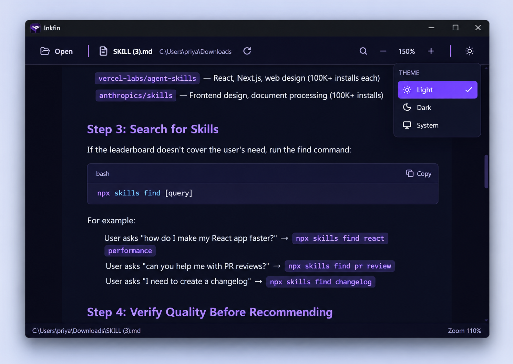
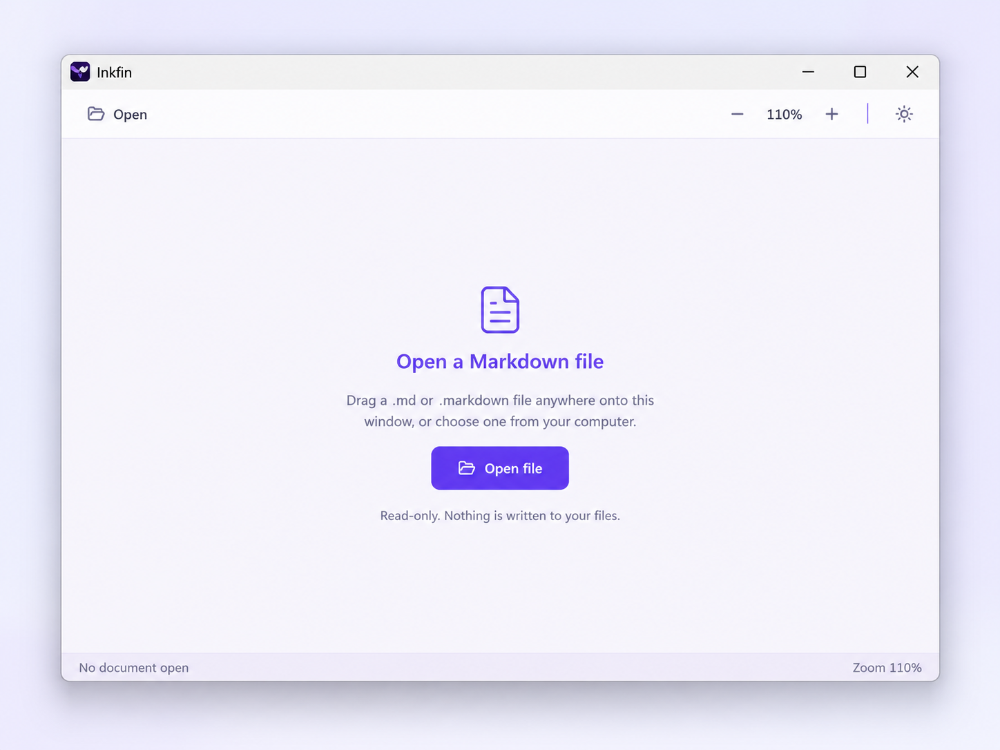
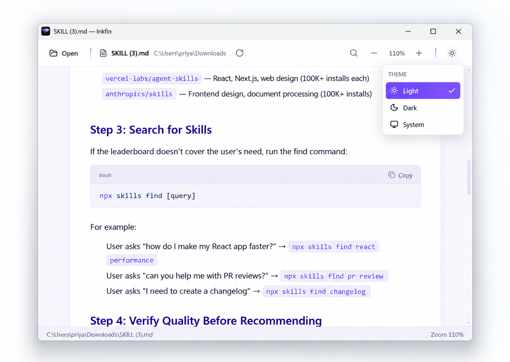

Open it your way
Use the toolbar, drag in a file, or open .md and
.markdown files from Explorer or Finder, or drag a document into the window.
A desktop Markdown viewer for Windows and macOS
Open a local file and read. No editor chrome, no account, no cloud.


Made for reading
GitHub Flavoured Markdown becomes a focused document, with the controls you need always within reach.

Use the toolbar, drag in a file, or open .md and
.markdown files from Explorer or Finder, or drag a document into the window.
Scale the document from 75% to 200%. The toolbar stays steady and the preference persists locally.
Inkfin watches the file on disk and reloads changes while preserving scroll position and the search query.
Pick either theme or follow the system. Document and syntax colours update together without a restart.
Private by construction
Inkfin reads the file you choose and renders it on your computer. There are no accounts, analytics, telemetry or network requests.
Remote images are blocked. Raw HTML is not executed. Links, assets and paths are validated by the Rust backend.
Windows installer is available now. The macOS build is still a test build and is not offered for download.
Windows 10 or 11, 64-bit. Includes WebView2 bootstrapper.
Download Windows installer 3.5 MB · Not code-signed; SmartScreen may warn.Unsigned and not notarised; Gatekeeper rejects it. Not ready for distribution.
macOS 14.2 or later · Apple silicon & Intel.
64-bit Windows 10 and Windows 11. The installer includes the WebView2 bootstrapper.
No. Inkfin is deliberately read-only and never writes back to your Markdown document.
Yes. Rendering, highlighting, search and refresh all run locally. Remote images are intentionally blocked.
A universal test build exists for macOS 14.2 or later on Apple silicon and Intel. It is unsigned and not notarised, and Gatekeeper rejects it. Automated CI checks confirm architecture and launch, but human interface acceptance and signed distribution checks remain outstanding, so no macOS download is offered.
The current installer is not code-signed. Choose “More info” and “Run anyway” if you trust the download.